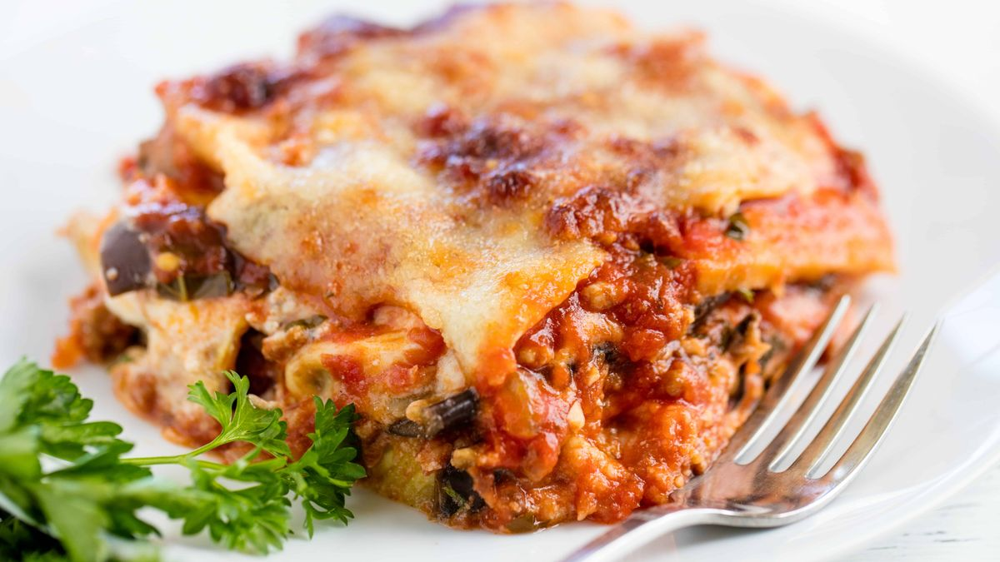

Lasagna Recipe

The greatest lasagna recipe
Lasagna are a type of pasta, possibly one of the oldest types, made of very wide, flat sheets. Either term can also refer to an Italian dish made of stacked layers of lasagne alternating with fillings such as ragù (ground meats and tomato sauce), vegetables, cheeses (which may include ricotta, mozzarella, and parmesan), and seasonings and spices, like Italian seasoning, such as garlic, oregano and basil
Ingredients
- 2 lasagna noodles
- 1 1/2 cups water
- 1/4 cup marinara sauce
- 1/4 cup chopped cherry tomatoes
- 1/2 tablespoon chopped fresh basil
- 1/2 cup shredded low-fat mozzarella cheese
Steps:
- Break each lasagna noodle into 6 rectangular pieces. Place noodles in a 4-cup microwave-safe bowl. Add water, making sure noodles are covered and water level is about halfway up the bowl. Place the bowl on a microwave-safe plate.
- Cook in the microwave on high for 2 minutes. Stir pasta quickly to keep it from clumping. Cook in 2-minute increments, stirring in between, and emptying any water that has boiled over onto the plate. Repeat until lasagna is tender yet firm to the bite, about 6 minutes total. Drain noodles, reserving 1 tablespoon of the cooking liquid. Return noodles and reserved liquid to the bowl.
- Stir marinara sauce and chopped tomatoes into the bowl, mixing until incorporated. Sprinkle on basil, and then mozzarella cheese. Cover surface of the bowl with a paper towel to prevent splatter and microwave until cheese is completely melted and tomato sauce is warmed, 1 to 1 1/2 minutes. Serve immediately
Back to main page